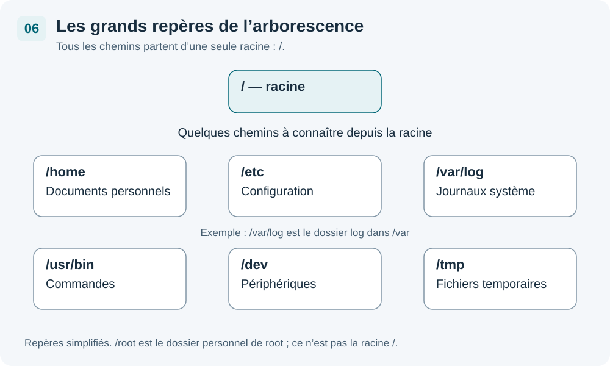

Tout part de /

Sous Linux, il n'y a pas de lettre de lecteur (C:\, D:\ …). L'intégralité du système de fichiers forme une seule arborescence dont la racine est /.
/ est comme le rez-de-chaussée d'un immeuble. Chaque dossier est un étage avec un rôle bien précis : stockage de configuration, programmes, données personnelles… Rien n'est placé au hasard.
Arbre interactif — clique sur un dossier
Détail des dossiers principaux
/home — Dossiers personnels
Contient le dossier personnel de chaque utilisateur. ~ est un raccourci pour /home/nom_utilisateur.
- /home/stagiaire/ → dossier de l'utilisateur stagiaire
- /home/alice/, /home/bob/ → chaque utilisateur a son propre espace
/etc — Configuration
Contient tous les fichiers de configuration du système et des services. C'est ici qu'on modifie le comportement des logiciels.
- /etc/passwd → liste des utilisateurs
- /etc/hosts → correspondances nom/adresse IP locales
- /etc/fstab → configuration du montage des disques
- /etc/apt/ → configuration du gestionnaire de paquets
/var — Données variables
Contient des données qui changent au fil du temps : journaux, bases de données, boites mail.
- /var/log/syslog → journal système général
- /var/log/auth.log → tentatives de connexion
/tmp — Fichiers temporaires
Zone de stockage temporaire utilisée par les programmes. Son contenu est effacé à chaque redémarrage.
Ne stockez jamais de données importantes dans /tmp. Tout son contenu disparaît au redémarrage.
/usr — Programmes utilisateur
Contient la plupart des programmes installés sur le système.
- /usr/bin/ → commandes accessibles à tous les utilisateurs
- /usr/sbin/ → commandes d'administration système
- /usr/lib/ → bibliothèques partagées
/dev — Périphériques
Contient des fichiers spéciaux représentant les périphériques matériels.
- /dev/sda → premier disque dur
- /dev/null → corbeille système (poubelle noire)
- /dev/tty → terminal en cours
/boot — Démarrage
Contient le noyau Linux et les fichiers nécessaires au démarrage du système (GRUB).
Fichiers système à connaître
| Fichier | Rôle |
|---|---|
| /etc/passwd | Liste de tous les comptes utilisateurs du système |
| /etc/hosts | Correspondances manuelles entre noms d'hôtes et adresses IP |
| /etc/fstab | Définit les partitions et périphériques à monter au démarrage |
| /var/log/syslog | Journal système général (activité du noyau et des services) |
| /var/log/auth.log | Journal des authentifications (connexions, sudo, SSH) |
Commandes d'exploration du disque
df -h # espace disque disponible sur chaque partition (human readable) du -sh /var/log # taille totale du dossier /var/log lsblk # liste les disques et partitions
| Commande | Utilité |
|---|---|
| df -h | Espace libre/utilisé par partition (Mo, Go…) |
| du -sh chemin | Taille d'un dossier spécifique |
| lsblk | Arborescence des disques et partitions |
Correspondances Windows / Linux
Si vous venez de Windows, voici comment s'organisent les concepts équivalents sous Linux :
| Linux | Windows | Contenu / Usage |
|---|---|---|
| /home/utilisateur/ | C:\Users\Nom\ | Dossier personnel de l'utilisateur |
| /etc/ | C:\Windows\System32\ | Configuration système et services |
| /var/log/ | Observateur d'événements | Journaux d'événements système |
| /tmp/ | C:\Windows\Temp\ | Fichiers temporaires (effacés) |
| /usr/bin/ | C:\Program Files\ | Programmes installés |
| /dev/sda | C:\, D:\ | Disques et partitions |
| /boot/ | Gestionnaire de démarrage Windows | Fichiers de démarrage, noyau |
Sous Windows, chaque disque a sa propre lettre (C:, D:, E:…). Sous Linux, tous les disques sont montés dans la même arborescence sous /. Un disque supplémentaire apparaîtra par exemple dans /media/ ou /mnt/.
Récapitulatif — Arborescence Linux
| Dossier | Contenu | Catégorie |
|---|---|---|
| / | Racine de l'arborescence — tout part de là | Système |
| /etc/ | Fichiers de configuration du système et des services | Système |
| /home/ | Dossiers personnels des utilisateurs | Utilisateur |
| /var/ | Données variables : journaux, bases de données, mails | Données |
| /var/log/ | Journaux système (syslog, auth.log…) | Données |
| /tmp/ | Fichiers temporaires — effacés au redémarrage | Système |
| /usr/ | Programmes et ressources pour les utilisateurs | Programmes |
| /usr/bin/ | Commandes accessibles à tous les utilisateurs | Programmes |
| /usr/sbin/ | Commandes d'administration système | Programmes |
| /bin/ | Commandes essentielles (souvent lien vers /usr/bin) | Programmes |
| /boot/ | Noyau Linux et fichiers de démarrage (GRUB) | Système |
| /dev/ | Fichiers représentant les périphériques matériels | Matériel |
| /mnt/ | Points de montage temporaires (disques, clés USB) | Système |
| /media/ | Montage automatique des médias amovibles | Système |
| /root/ | Dossier personnel du superutilisateur root | Système |